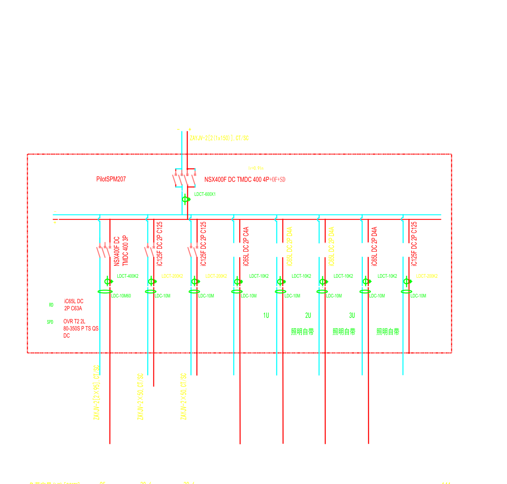
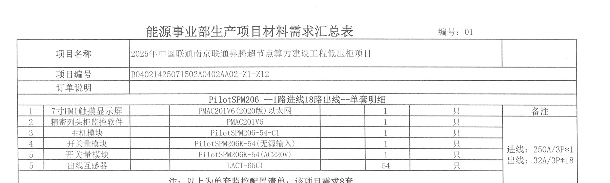
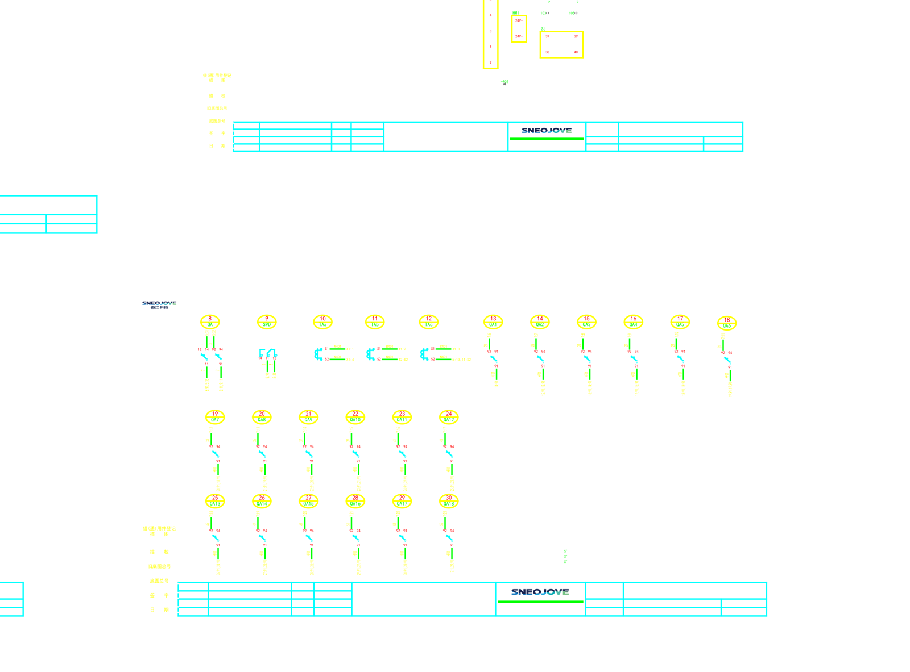

从 DWG 图纸自动生成设备配置清单 / 校验互感器·电缆匹配 —— 一套以规则与坐标提取为主、LLM 视觉为校验兜底的工程化方案，全部结论经真实示例图纸代码验证。
柜体台账、回路数、互感器数量、监控模块型号 —— 来自结构化块属性与块计数，机器直读零歧义。
每路出线电流、CT/电缆型号 —— 画在系统图监控子图上，坐标对齐+视觉可得，需置信度标注。
选型固定件清单、项目编号、待确认柜明细 —— 需刘琦/订单系统提供。
读取 CAD 图纸 → 识别列头柜、进线/出线回路 → 结合选型规则 → 输出标准化 Excel 设备配置清单（产品名称/型号/数量）。
提取互感器/断路器/电缆规格 → 按 GB/T 1208 与 GB 50054 规则校验匹配合理性 → 标记 CT 偏小、电缆过粗/过细等异常 → 输出评估报告。
DWG 经 ODA 转 DXF 后，以确定性引擎为主提取结构化数据，LLM 视觉对密集/边缘情况做校验兜底，最终输出 Excel 与评估报告。
这是项目最初的核心问题。经真实数据验证，答案是：核心提取与校验用规则引擎（更准、更省、可复现），LLM 视觉只用在 3 个兜底点。
标准图纸的柜体元数据是结构化块属性，断路器/CT/电缆是规整文字，且同回路信息同 X 坐标竖排对齐。确定性提取准确率高、零 token 成本、可复现。
仅用于：① 非结构化/扫描图纸的语义提取；② 断路器-回路的空间关联边缘情况校验；③ 无文字层 PDF 的读取（已改用 PaddleOCR 去 LLM 化）。
winget 安装 ODA File Converter 27.1.0，R2018/R2004 DWG 均成功转 DXF；ezdxf recover 稳健读取。
系统图块属性直读：柜编号/额定电流/二次图号/进出线方式 100% 还原。
柜属性 二次图号=301 精确指向「301-单路进线18路出线」二次图，建立系统图↔二次图链接。
系统图每个柜的监控子图逐回路画明进线/出线 CT、断路器、电缆、负载；全图 51 张子图覆盖标准柜。
坐标列对齐引擎对 1进8出柜提取逐回路 BOM，与 LLM 视觉读图 7/8 完全一致，BOM 汇总 100% 吻合。
对无文字层的配置清单 PDF 做确定性 OCR（置信度≈1.00），与 DWG 代码统计三方一致。
诚实分层：把确定的自动输出，不确定的标"需人工复核"，而非对全部数据给统一的"已识别"假象。
柜体清单（65）、每柜额定电流、进出线方式、外形尺寸、数量、同型柜套数；单张二次图出线回路数（IC65块×18 与 QF1~QF18 双信号互证）。
全项目断路器规格（621条）、CT/霍尔型号（239个）、电缆规格（606条）—— 提取为清单可靠；归属到具体回路见第 3 档。
每路出线电流、CT/电缆型号、断路器-回路归属 —— 数据在监控子图上，按 X 列对齐可得，需置信度标注与视觉交叉校验（已验证 7/8 命中，边缘情况可逮出）。
选型固定件（HMI/软件/继电器）、项目编号/抬头、13 个二次图号"待确认"柜的明细、实际负荷电流 —— 需业务输入或订单系统。
以一个「1进8出」柜的监控子图为例：坐标引擎自动提取逐回路 BOM，与视觉读图交叉校验。

| 产品名称 | 型号 | 数量 | 来源 |
|---|---|---|---|
| 进线霍尔传感器 | LDCT-600X1 | 1 | 图纸直读 |
| 出线霍尔传感器 | LDCT-400K2 | 1 | 图纸直读 |
| 出线霍尔传感器 | LDCT-200K2 | 3 | 图纸直读 |
| 出线霍尔传感器 | LDCT-10K2 | 4 | 图纸直读 |
| 漏电流传感器模块 | LDC-10M60 / 10M | 1 / 7 | 图纸直读 |
| 监控主机 / 电源 | PilotSPM207 / PMAC1215-12 | 1 / 1 | 图纸直读 |
| HMI / 软件 / 继电器 | PMAC201V7 / MY2N-GS | 各 1 | 固定件·规则补 |
同一份配置，从三条独立路径取数 —— PDF（PaddleOCR 确定性）、DWG（代码统计）、DWG（LLM 视觉）—— 结果完全一致。
| 数据项 | PDF · PaddleOCR | DWG · 代码统计 | DWG · LLM 视觉 | 结论 |
|---|---|---|---|---|
| 出线回路数 | 18 (32A/3P×18) conf 1.00 | IC65 块 ×18 | QA1~QA18 = 18 | ✓ 一致 |
| 出线互感器 | 54 (LACT-65C1) conf 1.00 | QF1a~QF18c = 54 相点 | 18 通道 × 3 相 = 54 | ✓ 一致 |
| 进线 | 250A/3P×1 conf 1.00 | 进线开关(1路) | TAa/TAb/TAc 三相 | ✓ 一致 |
| 主机 / 开关量模块 | PilotSPM206-54-C1 ×1 / ×2 | 出现 ×1 / ×2 | 主机区可见 | ✓ 一致 |


ODA File Converter 27.1.0
DWG → DXF（R1.2~R2018）
ezdxf 1.4.4 · recover 模式
块属性 / 文字 / 坐标
openpyxl / pandas
格式化 Excel + 报告
matplotlib 渲染 PNG
+ Claude 多模态读图
PaddleOCR 2.7.3 (PP-OCRv4)
PDF 表格确定性识别
GB/T 1208-2006 · GB 50054
CT 70% 选型 / 载流量校验
① 选型规则文件（电流/电压→型号+数量）
② 固定件清单（HMI/软件/继电器）
③ 13 个"待确认"柜的二次图号映射
④「列头柜」判定口径（系统图均称"动力柜"）
⑤ 项目编号/抬头来源
① 批量版引擎：遍历 51 张监控子图自动出多柜清单，相同配置合并"需求N套"
② 三方核对封装为自动校验工具（DWG+PDF→一致性报告）
③ 需求二 CT/电缆校验最小闭环
④ 兼容 H1B2R 等其他传感器家族